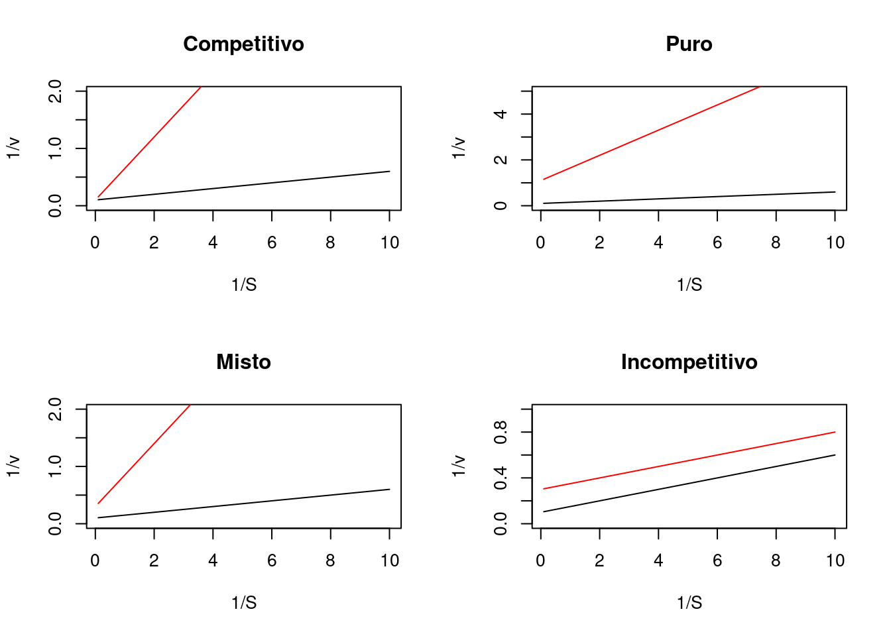

9 Inibição Enzimática
9.1 Introdução
A atividade enzimática pode ser reduzida na presença de vários efetores, entre moléculas endógenas ou exógenas do metabolismo celular, incluindo o próprio substrato. Genericamente a inibição enzimática classifica-se como irreversível quando a ativide decai pela ligação covalente de um inibidor, ou reversível, quando há um equilíbrio de associação/dissociação com a macromolécula. A seguir serão ilustradas inibições reversíveis.
9.2 Detalhes
9.2.1 Inibição pelo substrato
Uma inibição enzimática comum ao metabolismo é a protagonizada pelo próprio substrato em excesso no meio, sendo definida por:
\[\begin{equation} v=\frac{Vm*S}{S(1+\frac{S}{Ks})+Km} \end{equation}\]Dessa forma, o gráfico resultante de uma inibição por excesso de substrato pode ser reproduzido por:
Percebe-se pela figura que a atividade da enzima alcança um limite sendo reduzida com o aumento do teor de substrato.
9.2.2 Modelos de inibição enzimática
A inibição de enzimas por moléculas que não o próprio substrato pode ser representada por um diagrama no qual o efetor altera um dos elementos representados no diagrama abaixo.

Nesse caso, pode-se definir os três tipos principais de inibição enzimática reversível como inibição competitiva, incompetitiva e não competitiva (pura ou mista). Em síntese, a inibição competitiva dá-se quando o inibidor complexa-se ao sítio ativo da enzima; a inibição incompetitiva, quando o inibidor interage com o complexo enzima-substrato; e a inibição não competitiva, quando o inibidor liga-se em outro local que não o sítio ativo da enzima, podendo ainda ser pura (Kiu = Kic) ou mista (Kiu > ou < Kic).
Um modelo matemático que abrange esses três tipos de inibição enzimática é descrito na equação abaixo:
Dessa forma, a equação acima reduz-se em seus termos multiplicadores no denominador, em função do tipo de inibição enzimática presente, até o modelo primitivo de Michaelis-Mentem, quando na ausência do inibidor.
9.2.3 Curva de Michaelis-Mentem para modelos de inibição enzimática
As curvas diretas de cinética enzimática sofrem alterações de perfil em função dos três tipos principais de inibição enzimática reversível, tais como ilustrado abaixo

Veja que para o modelo competitivo a velocidade limite Vm da reação tende a ser alcançada, já que a ocupação do sítio ativo da enzima é mutualmente exclusiva entre substrato e inibidor, privilegiando o primeiro quando em alto teor.
Por outro lado, o valor de Vm não é tangível para os demais modelos de inibição, já que o inibidor se liga em outro sítio na enzima (não competitivo) ou ao próprio substrato, e esse conjunto à enzima (incompetitivo).
9.2.3.1 Diagnóstico de modelos de inibição enzimática por Lineweaver-Burk
As transformações lineares da equação de Michaelis-Mentem são muito úteis no diagnóstico visual de modelos de inibição. Nesse sentido, o emprego da linearização por duplos-recíprocos para esses modelos resutará nas equações de inibição que seguem:
\[\begin{equation} \frac{1}{v}=\frac{1}{Vm}+\frac{Km(1+\frac{I}{Kic})}{Vm}*\frac{1}{S} \quad ;\, competitivo \end{equation}\] \[\begin{equation} \frac{1}{v}=\frac{1}{Vm}+\frac{Km(1+\frac{I}{Ki})}{Vm}*\frac{1}{S(1+\frac{I}{Ki})} \quad ;\, puro \end{equation}\] \[\begin{equation} \frac{1}{v}=\frac{1}{Vm}+\frac{Km(1+\frac{I}{Kic})}{Vm}*\frac{1}{S(1+\frac{I}{Kiu})} \quad ;\, misto \end{equation}\] \[\begin{equation} \frac{1}{v}=\frac{1}{Vm}+\frac{Km}{Vm}*\frac{1}{S(1+\frac{I}{Kiu})} \quad ;\, incompetitivo \end{equation}\]Observe que os termos multiplicadores inseridos em S e Km na equação de duplo-recíproco apenas alteram seu formalismo apresentado equação de Lineweaver-Burk. O diagnóstico visual para os modelos é representado a seguir.

9.2.3.2 Ki & IC\(_{50}\)
A concentração inibitória a 50% do teor de inibidor, definida como IC\(_{50}\), pode ser determinada empiricamente sem o conhecimento dos parâmetros de catálise enzimática envolvidos.
Para isso, basta se obter um valor de inibição relativa num ensaio a concentração fixa de S, variando-se o teor de inibidor. De fato, análogos ao IC\(_{50}\) existem em ampla gama nas Ciências Naturais, não envolvendo necessariamente qualquer informação cinética ou termodinâmica dos compostos envolvidos, mas tão somente a informação empírica do resultado. Exemplificando, os parâmetros DE\(_{50}\) (dose efetiva) ou DL\(_{50}\) (dose letal), e mesmo projeções de X\(_{50}\), tal como Tm (temperatura de desnaturação a 50%), e o valor de pKa em tampões (pH em que as espécies encontram-se 50% ionizadas/protonadas em solução).
No entanto, existe uma relação útil entre a constante de equilíbrio de dissociação do inibidor Ki e o valor de IC\(_{50}\) que permite sua permuta, desde que conhecido o modelo de inibição. Generalizando para os modelos de inibição, pode-se definir uma equação geral pra relação de Cheng-Prusoff como:
\[\begin{equation} IC_{50} = \frac{(1+\frac{S}{Km})}{(\frac{1}{Kic})+(\frac{1}{Km*Kiu})} \end{equation}\]Exemplificando, para um modelo competitivo de inibição, onde Kiu é nulo:
\[\begin{equation} IC_{50} = Kic(1+\frac{S}{Km}) \end{equation}\]9.2.4 Cinética de estado pré-estacionário
Existem basicamente três tipos de comportamentos cinéticos para as enzimas: comportamento de Henry-Michaelis-Mentem-Briggs-Haldane, sucintamente denominado por michaeliano ou de estado estacionário (steady-state), comportamento de fase lag (quando o substrato leva algum tempo para ser convertido em produto), e comportamento de burst, transiente, ou de estado pré-estacionário (quando uma fase com rápida liberação de produto precede o estado estacionário).
Algumas enzimas trabalham seguindo a cinética de burst, entre as quais algumas nucleosidades e glicosidases, e dehalogenases. A cinética de estado pré-estacionário segue um formalismo um pouco distinto, e que depende do quantitativo de etapas reacionais. Exemplificando abaixo para uma reação de 3 etapas:
\[\begin{equation} E+S \begin{array}{c} _{k1}\\ \rightleftharpoons\\ ^{km1} \end{array} E*S \begin{array}{c} _{k2}\\ \rightleftharpoons\\ ^{km2} \end{array} E*P \begin{array}{c} _{k3}\\ \rightarrow \\ ^{}\end{array} E+P \end{equation}\]